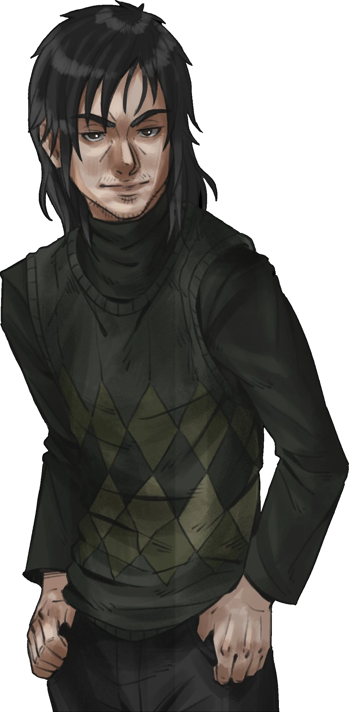
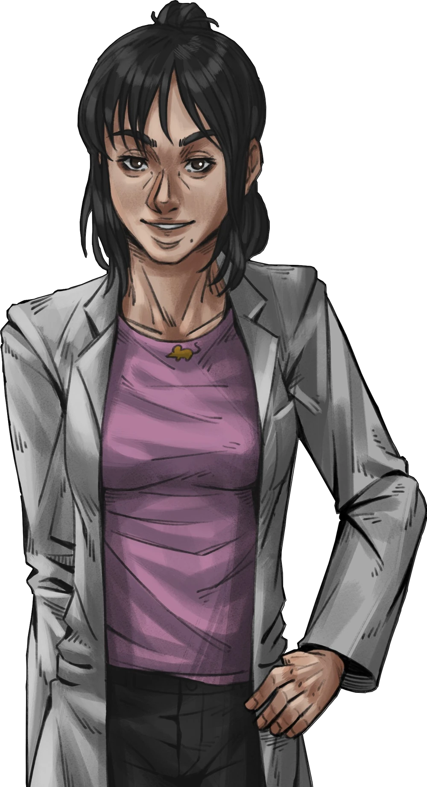
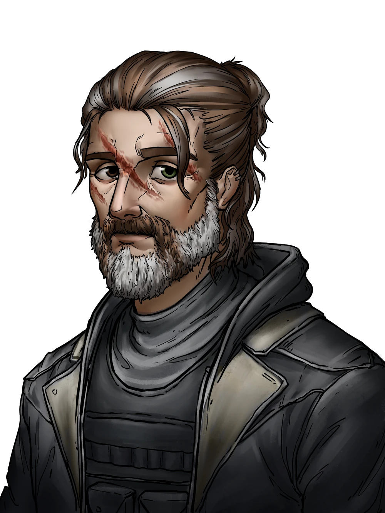
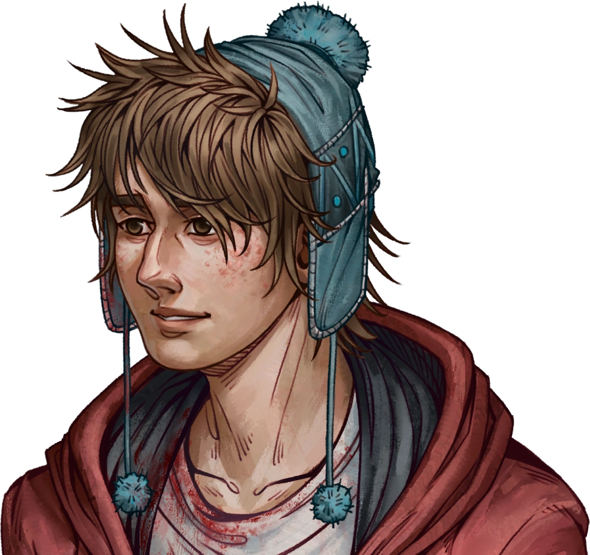
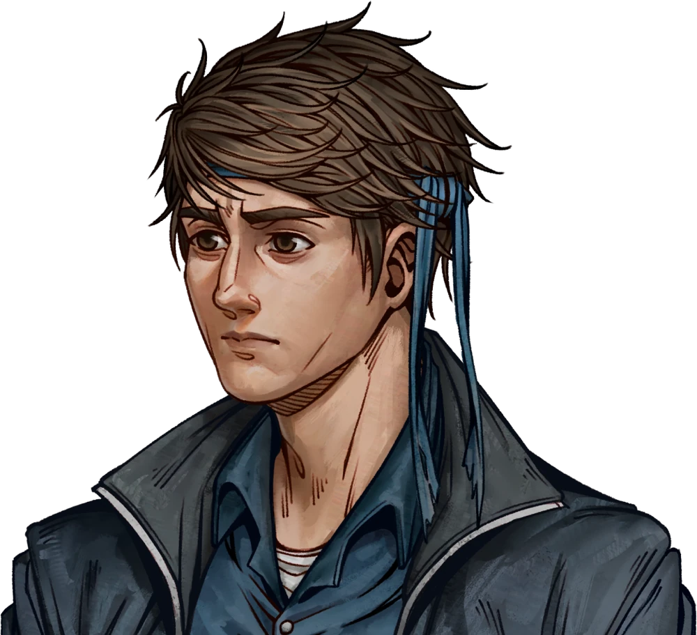
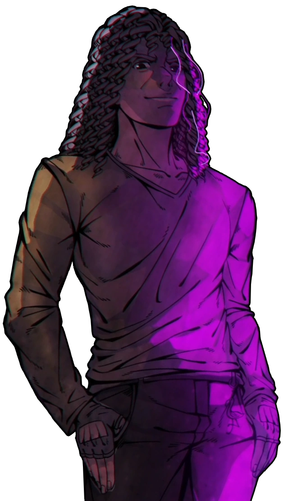
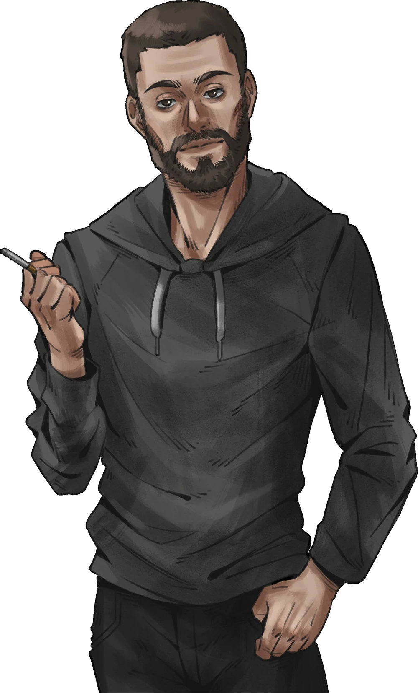

Clique duas vezes em cada personagem abaixo para removê-los, e continue para a próxima página.








QSMP Mousercise
Clique duas vezes em cada personagem abaixo para removê-los, e continue para a próxima página.